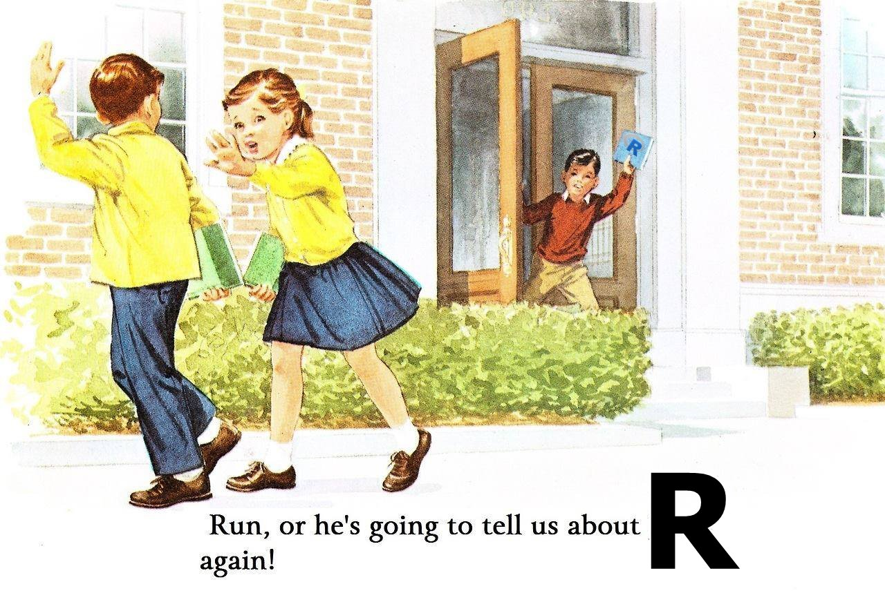

Posgrado, Instituto de Ecología A.C.
26 de noviembre de 2022
Hola a todos. En esta página encontrarán los scripts de introducción al R y RStudio.

Nota: Si vienes del curso de Introducción a estadística del Instituto de Ecología A.C., puedes regresar a la página del curso con este link [ ]